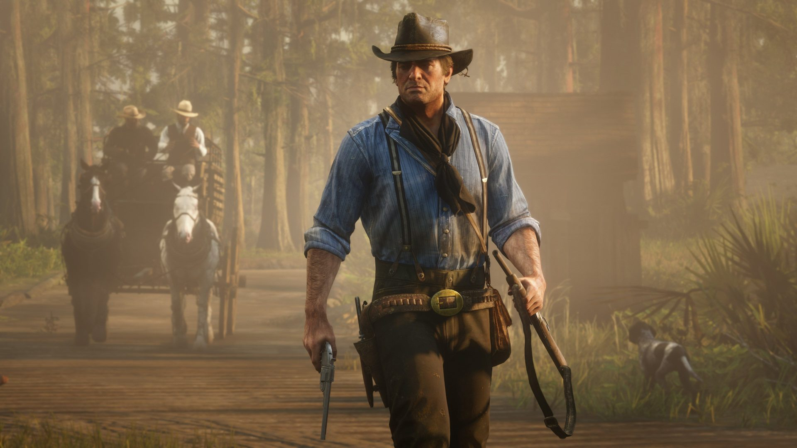

Arthur Morgan

John Marston
The Red Dead Redemption series is an open-world action-adventure western game created by the major video game producer Rockstar Games. It is widely regarded as one of the best video game franchises due to its attention to detail and immersive storytelling.
These games are known for their immersive open-world gameplay interactions and compelling storytelling. Players can explore vast landscapes, interact with various characters, and engage in numerous side activities that make the world feel alive.
The first game in the series, Red Dead Redemption (in canon), was released in 2010. It introduced players to the remnants of the Wild West as civilization tamed the untamed frontiers. The protagonist, John Marston, is set to leave his old life of crime and start anew while his past catches up with him. The game features a rich narrative and memorable characters.
The second game (canon), Red Dead Redemption 2, was released in 2018 and serves as a prequel to the first game. It follows the outlaw Arthur Morgan and the Van der Linde gang as they try to survive in the dying days of the Wild West. The game also features John Marston, the protagonist of the first game, as a member of the gang.